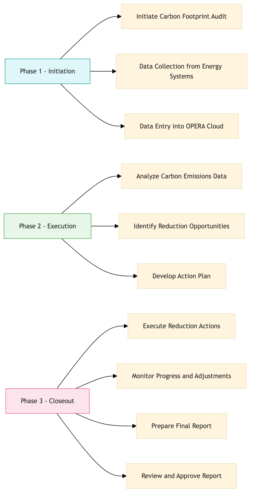

| Role | Steps |
|---|---|
| Sustainability Manager | 1.1 3.1 3.3 3.4 |
| Facilities Engineer | 1.2 2.2 3.1 |
| Executive Housekeeper | 1.3 |
| Sustainability Analyst | 2.1 3.2 |
| Maintenance Technician | 3.1 |
| Step | Name | Role | System | Input | Output | KPI | Dec? | Exc? | Pain Point / Risk |
|---|---|---|---|---|---|---|---|---|---|
| 1.1 | Initiate Carbon Footprint Audit | Sustainability Manager | Oracle OPERA Cloud | Audit checklist | Audit plan | Less than 1 hour | N | Y | Inconsistent data collection across departments |
| 1.2 | Data Collection from Energy Systems | Facilities Engineer | Schneider EcoStruxure, Honeywell INNCOM | Energy consumption logs | Aggregated energy data report | Less than 2 hours | Y | N | Manual data entry errors |
| 1.3 | Data Entry into OPERA Cloud | Executive Housekeeper | Oracle OPERA Cloud | Aggregated energy data report | Updated carbon footprint database | Less than 4 hours | N | Y | Data validation issues |
| 2.1 | Analyze Carbon Emissions Data | Sustainability Analyst | Microsoft Power BI | Updated carbon footprint database | Carbon emissions analysis report | Less than 8 hours | Y | N | Complex data interpretation |
| 2.2 | Identify Reduction Opportunities | Facilities Engineer | Oracle OPERA Cloud, Schneider EcoStruxure | Carbon emissions analysis report | Reduction strategy proposal | Less than 10 hours | N | Y | Resource allocation for improvements |
| 2.3 | Develop Action Plan | Sustainability Manager | Oracle OPERA Cloud, Workday HCM | Reduction strategy proposal | Action plan with timelines and responsibilities | Less than 12 hours | Y | N | Coordination across departments |
| 3.1 | Execute Reduction Actions | Facilities Engineer, Maintenance Technician | Schneider EcoStruxure, Honeywell INNCOM | Action plan with timelines and responsibilities | Execution status report | Ongoing monitoring | Y | Y | Technical issues during implementation |
| 3.2 | Monitor Progress and Adjustments | Sustainability Analyst | Microsoft Power BI, Oracle OPERA Cloud | Execution status report | Progress update report | Weekly monitoring | N | Y | Data accuracy and completeness |
| 3.3 | Prepare Final Report | Sustainability Manager | Microsoft Power BI, Oracle OPERA Cloud | Progress update report | Final carbon footprint tracking and reporting document | Less than 1 week | Y | N | Stakeholder communication |
| 3.4 | Review and Approve Report | General Manager | Oracle OPERA Cloud, Microsoft Power BI | Final carbon footprint tracking and reporting document | Approved report for distribution | Less than 2 days | N | Y | Approval delays |
This process outlines the steps for tracking and reporting a hotel's carbon footprint at a Marriott full-service hotel using Oracle OPERA Cloud PMS and other relevant systems.